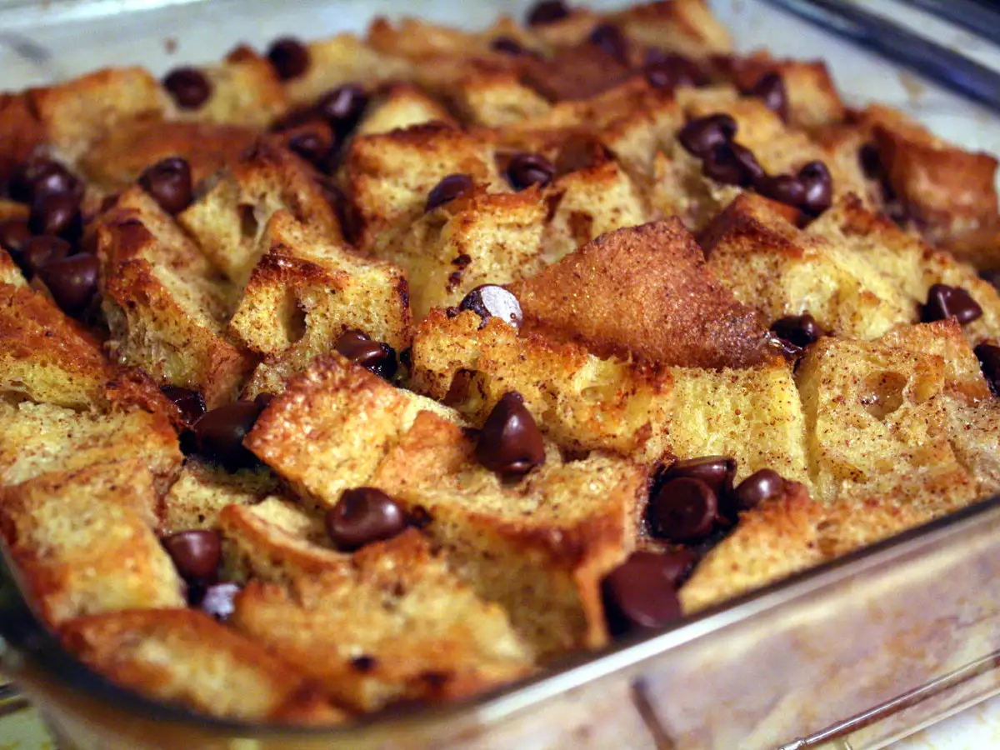

Bread Pudding Recipe

Description
This is a recipe for the delicious breadd pudding. This traditional version is decadent, delicious, and easy to make with basic ingredients. It will quickly find a permanent home in your recipe box.
Preparation Time: 15 minutes
Cook Time: 45 minutes
Total Time: 60 minutes
Servings: 12
Yield: 1 (8-inch square) pan
Ingredients
- 6 slices day-old bread, torn into small pieces
- 2 tablespoons unsalted butter, melted
- 1/2 cup raisins (Optional)
- 2 cup Milk
- 3/4 cup White Sugar
- 1 teaspoon Ground Cinammon
- 1 teaspoon Vanilla Extract
- 4 Large Eggs, Beaten
Steps
- Gather all ingredients. Preheat the oven to 350 degrees F (175 degrees C).
- Place bread pieces into an 8-inch square baking pan. Drizzle melted butter over bread and sprinkle raisins over top.
- Whisk milk, sugar, eggs, cinnamon, and vanilla together in a medium mixing bowl until well combined.
- Pour mixture over bread, and lightly push down with a fork until all bread is covered and soaking up the liquid.
- Bake in the preheated oven until golden brown and the top springs back when lightly pressed, about 45 minutes.
- Enjoy!